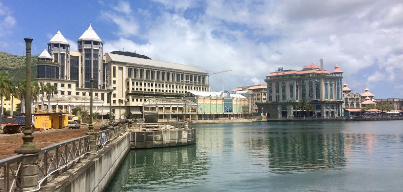

Renowned for its top-notch educational institutions that provide a vast array of programs in a friendly and English-speaking setting, lively culture, and breathtaking scenic beauty, Mauritius is an enticing study abroad destination. The country’s distinctive fusion of academic prowess and tropical charm makes it a desirable option for overseas students.
With an emphasis on global and regional practices, an MBA in Mauritius generally provides a thorough business education. Based on whether they are pursued full-time or half-time, these programs generally take 1-2 years to complete.
Why study an MBA in Mauritius?
Students should think about pursuing an MBA in Mauritius for the following reasons:
- First-rate Education: Mauritius is home to internationally acknowledged institutions and programs.
- English Language: Courses are frequently instructed in English, which is beneficial for international business.
- Budget-friendly Cost: In comparison to other regions, the tuition fees and living expenses in Mauritius are lower.
- Varied Setting:A cosmopolitan and multilingual community.
- Cultural Encounter: Distinctive fusion of cultures and traditions.
- Central Location:Point of entry between Asia, Africa, and Europe.
- Possibilities for Business: Booming economy with developing markets.
- Networking: Access to global business networks and relationships.
Best MBA specializations to pursue in Mauritius
Students aspiring to pursue an MBA in Mauritius can choose from among these specializations:
- Project Management
- International Business
- Finance
- Human Resource Management
- Entrepreneurship
- Information Technology Management
- Marketing
- Supply Chain Management
Prominent universities in Mauritius to pursue an MBA
The prominent universities in Mauritius to pursue an MBA are mentioned below:
- Middlesex University Mauritius
- Open University of Mauritius
- University of Technology, Mauritius
- Paris-Dauphine University, Mauritius (Dauphine University)
- Charles Telfair Institute
- University of Mauritius
What’s the cost of studying an MBA in Mauritius?
Based on the institution and program, the cost of pursuing an MBA in Mauritius differs. Typically, tution fees cost between MUR 150,000 to MUR 400,000 annually. Moreover, students should set aside money for supplementary expenditures like books, housing, and living expenses, which can increase the total cost.
Eligibility Criteria to study an MBA in Mauritius
Mentioned below are the eligibility criteria to pursue an MBA in Mauritius:
- The student needs to hold an accredited bachelor’s degree or comparable from a renowned institution.
- He/she should submit academic transcripts from all education institutions previously attended.
- Scores of standardized tests like the GMAT or GRE may be required by certain universities.
- If the student’s prior education was not in English, he/she may need to prove his/her fluency in English through appearing for English language proficiency tests such as the IELTS or TOEFL.
- Generally, 2-3 years of pertinent work experience may be required by certain programs.
- Submission of a personal essay or statement of purpose.
- Generally 2-3 letters of recommendation from instructors or employers.
- The student needs to submit a thorough curriculum vitae (CV) or resume.
- As part of the selection procedure, certain programs may require an interview.
- The student needs to provide proof of adequate funds to pay for tuition fees and living costs.
- Filled-out application form in accordance with the university’s standards.
- Management Consultant
- Business Development Manager
- Supply Chain Manager
- Financial Analyst
- Operations Manager
- Entrepreneur/Start-up Founder
- Human Resources Manager
- Project Manager
- Investment Banker
- Marketing Manager
-

Job Opportunities after completing an MBA in Mauritius
Post completing an MBA in Mauritius, students can take up any of the job positions mentioned below:
FAQs:
Q: Are overseas students allowed to work while studying in Mauritius?
Yes, in Mauritius, overseas students are permitted to work part-time for a maximum of 20 hours per week while studying.
Q: Are there possibilities for scholarships or monetary assistance available?
Yes, scholarships based on merit or need are offered by several institutions. Moreover, funding opportunities via external organizations or government initiatives may be available.
For further assistance or queries students can contact us, Edwise International and avail our wide range of services for students on destinations like study in UK,study in USA, study in Canada, study in Australia, study in New-Zealand, study in Singapore, study in Ireland and many other countries.